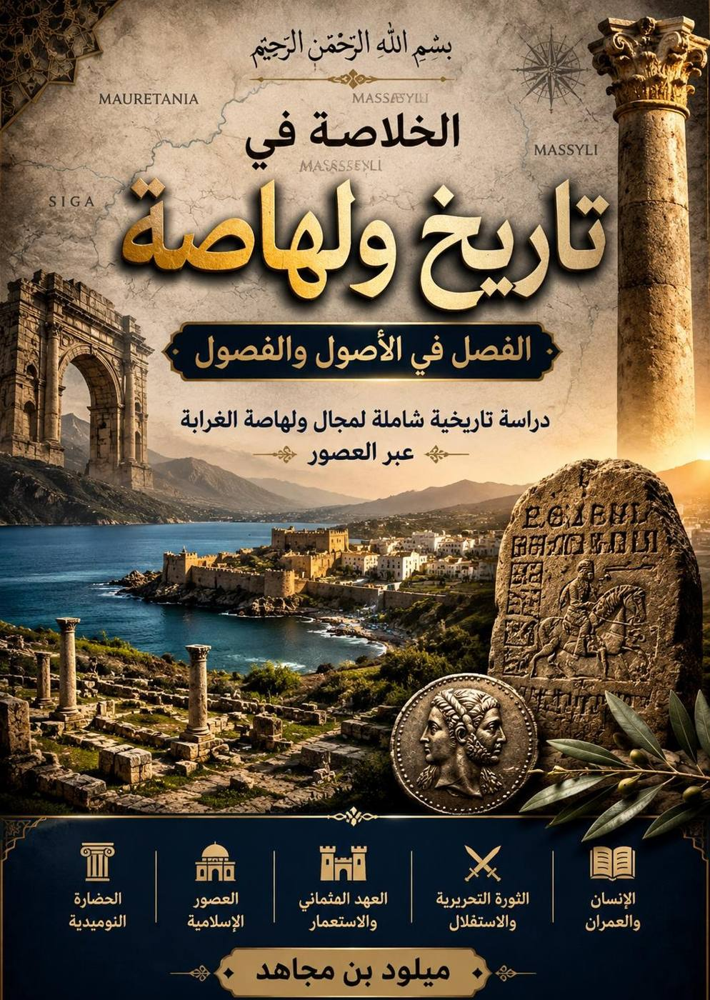

الخلاصة في تاريخ ولهاصة: الفصل في الاصول والفصول

محتويات الكتاب
كلمة تقديمالفصل الأول: ولهاصة والامتداد النوميدي; مقاربة تفكيكية في الأنساب، اللغة والذاكرة السياسيةالفصل الثاني: ولهاصة الغرابة من العصر النوميدي إلى الفتح الإسلاميالفصل الثالث: ولهاصة الغرابة من الفتح الإسلامي إلى تحالف جبال ترارةالفصل الرابع: ولهاصة الغرابة من تحالف جبال ترارة الى الاستقلالالفصل الخامس:الإنسان والعمران في ولهاصة الغرابةالخاتمة